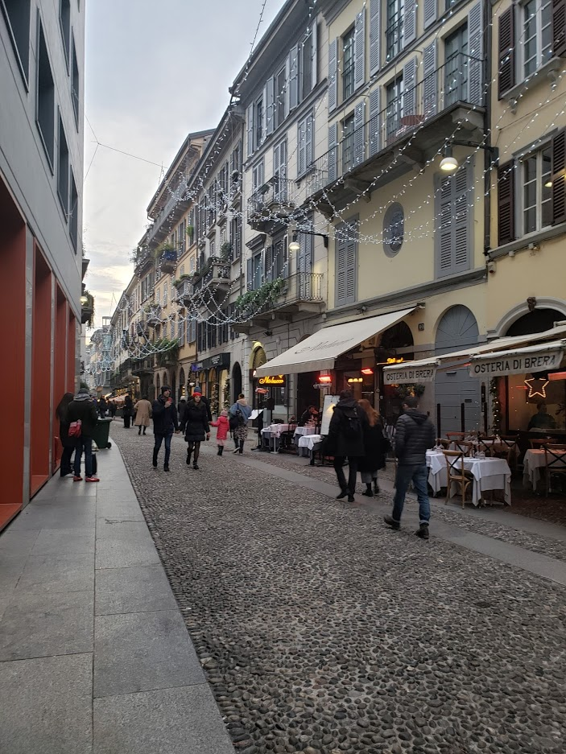
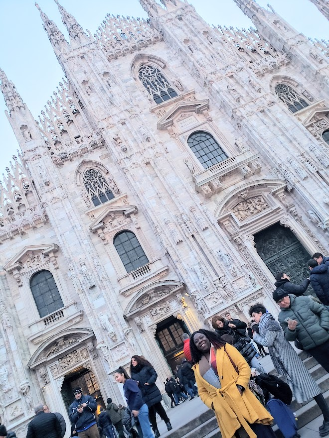
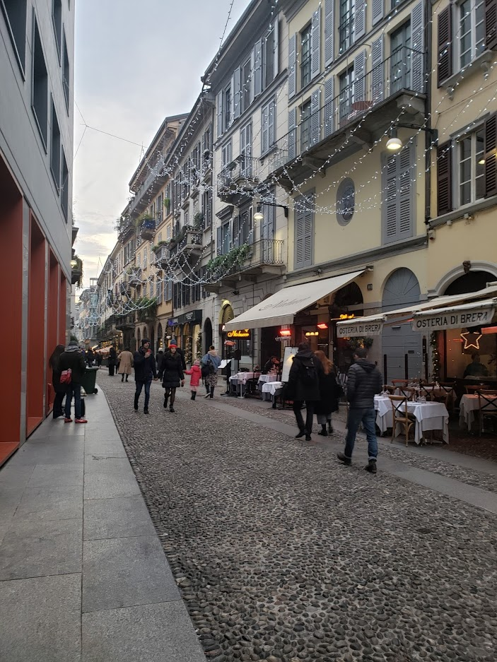
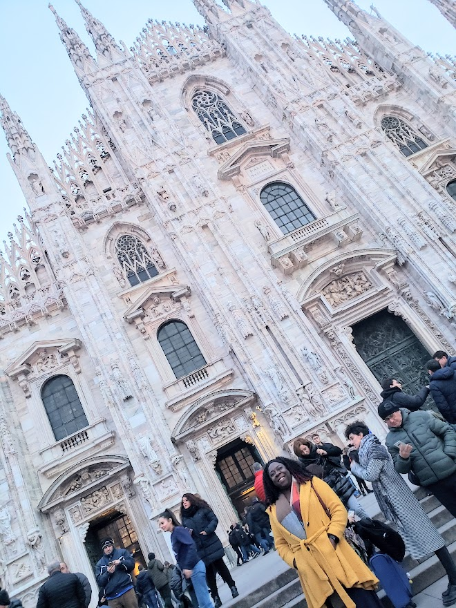
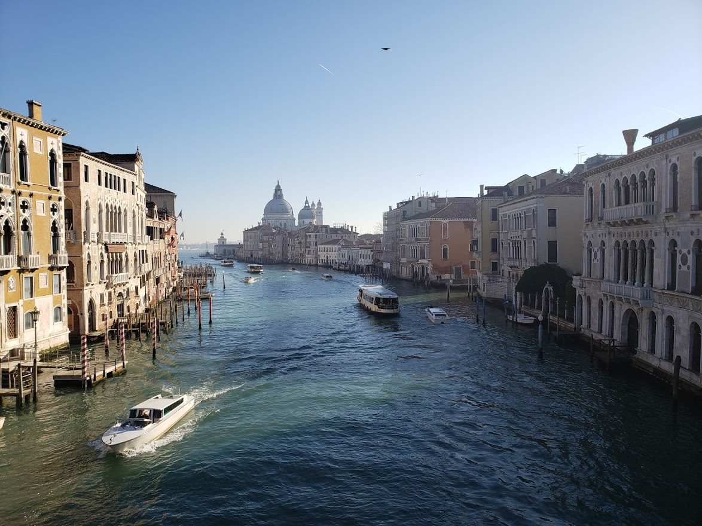
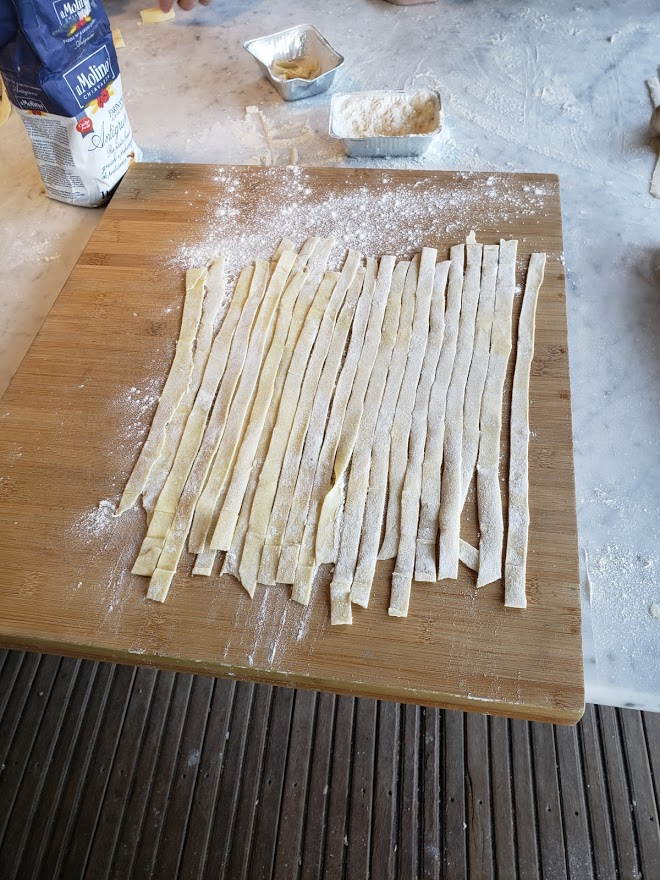
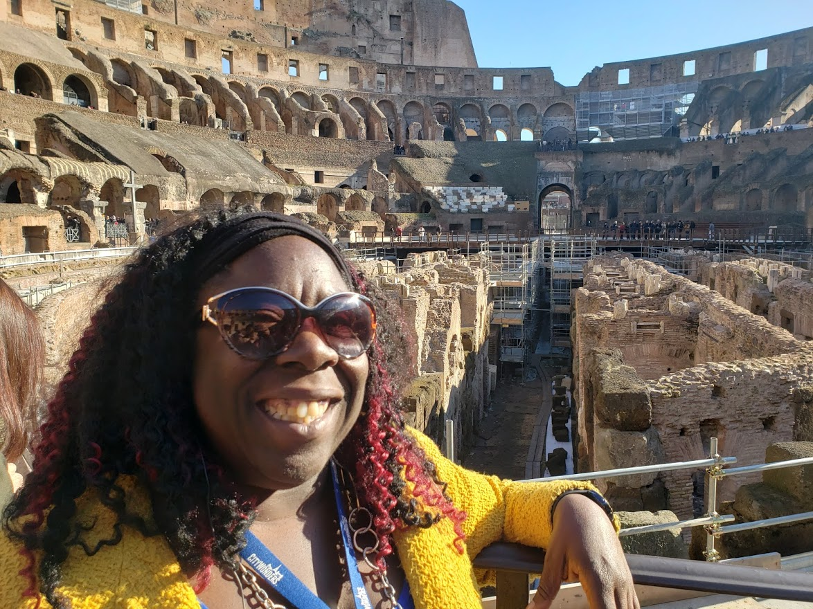

Milano/ Milan
First stop was Milan. Immediately I knew I was in Italy with the picture perfect Italian streets
The Duono di Milano was beautiful. I even got to walk on the esquisitely carved rooftop!
Not long ago I decided to take a trip for a week to Italy. I arrived on January 2nd - right before Covid changed our lives forever.
Here are a few of my favorite attractions in each of the four cities I visited

First stop was Milan. Immediately I knew I was in Italy with the picture perfect Italian streets
The Duono di Milano was beautiful. I even got to walk on the esquisitely carved rooftop!
When I arrived in Venice, I didn't realize that only canals meant no cars. I got in much more walking than I expected but it was worth in to be able in a city where there wan't bumpet to bumper traffic to worry about.
There were boats everywhere with folks able to parallell park on water better than I can on land.

In Florence, I was able to learn about traditional Northen Itallian cooking. Our meal started with a bruschetta and ended with us making a tiramisu. For the main course we made our own pasta. I think mine looked pretty good for a first attempt. You can also see the beautiful surroundings of the Tuscan countryside where the kitcheb was located.

I saw quite a bit in Rome from the Vatican to the Colosseum. Here's a final picture of me inside the structure.
 Return to the top of the page